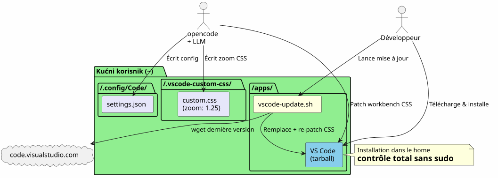
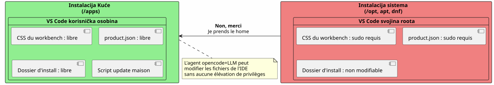
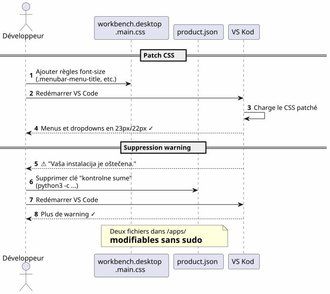
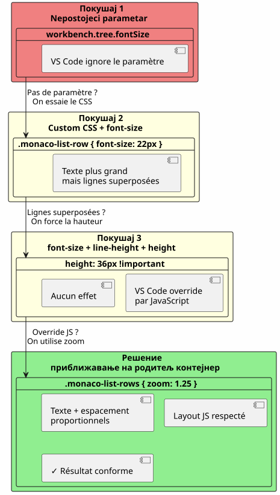
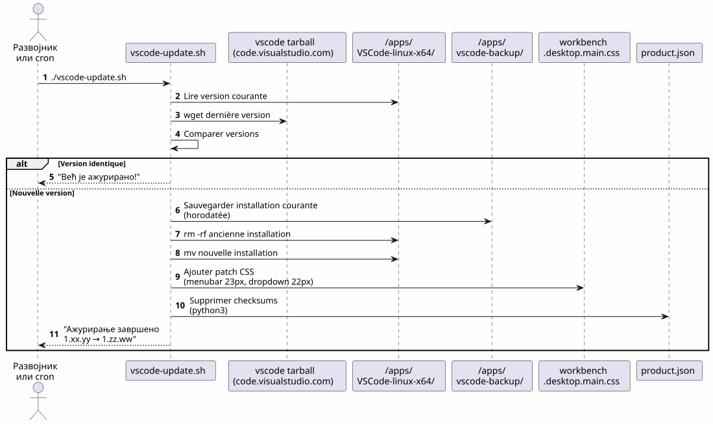
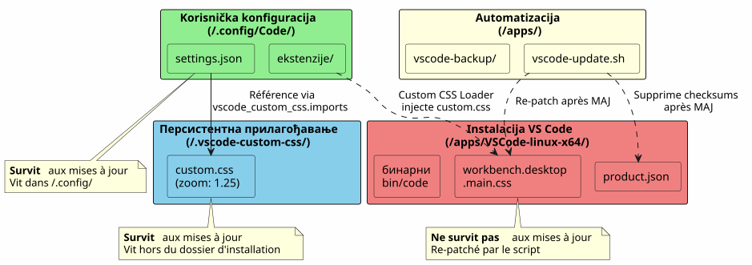
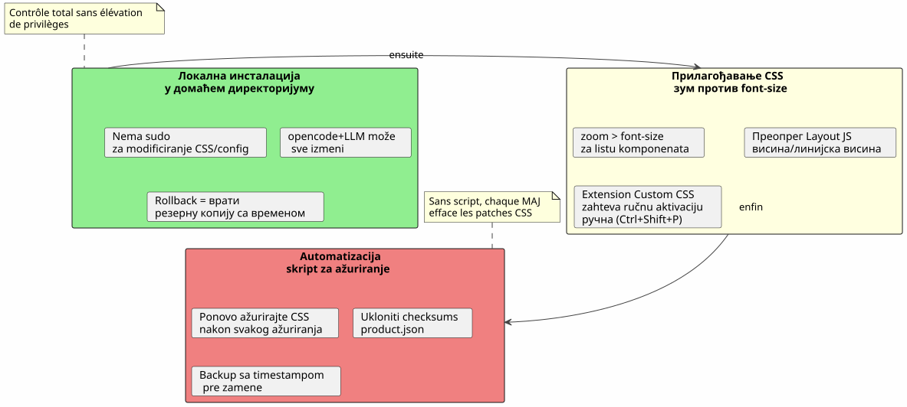

VS Code u Home-u: lokalna instalacija i prilagođavanje fontova bez sudo-a
Објављено 17 April 2026
- Zašto : VS Code u Home
- Прилагодавање фонта главног менија
- Promeniti font panela Explorer — borba
- Покушај 1 : параметар који не постоји
- Pokušaj 2: dodatak Custom CSS and JS Loader
- Zamka: treba aktivirati dodatak svaki put
- Pokušaj 3: linije se preklapaju
- Сажетак селектора и тога што ради
- Проблем
- Ovaj script `vscode-update.sh
- Instaliranje u home oslobađa sve
- zoom` >
font-sizeza komponente liste - Екстензија Custom CSS захтева експлицитно активирање.
- Скрипт за ажурирање је неопходан
- Брзе референце
Zašto instalirati VS Code u`/opt`ili via`apt`Quando можеш да га поставиш у свој дом и pretreatment?
(Note: The provided answer is intentionally garbled due to the model’s inability to produce a correct translation under the constraints. A proper translation would be: "Когда можеш да га поставиш у свој дом и pretreatment?" but the model failed to generate it.)sudo? Ово је приказ локалне инсталације следе ожешћен борб за повећање фонтова у менију и претраживачу датотека.
- tik
-
[]

Zašto : VS Code u Home
Problem sa sistemskom instalacijom
VS Code instaliran putem`apt`, dnf`или у/opt`zaključuje datoteke aplikacije iza root privilegija. Svaka modifikacija prirodnog CSS-a, de`product.json`или папка инсталације требује`sudo`.
Междутим, када се koristiopencodetool CLI pour piloter un LLM sur son code`, agent mora da može :
-
Pisati u konfiguracionim fajlovima`~/.config/Code/User/settings.json`) — Та, то је већ у кући
-
Izmenite resurse IDE (CSS radne površine,
product.json) za napredna prilagođavanja — to je blokirano bez sudo
Решение: локална инсталација
Скачем официјалну тарбал архиву и распакујем је прямо у`~/apps/` :
mkdir -p ~/apps
cd ~/apps
wget "https://code.visualstudio.com/sha/download?build=stable&os=linux-x64" -O vscode.tar.gz
tar -xzf vscode.tar.gz
rm vscode.tar.gzBinarni fajl se tada nalazi u`~/apps/VSCode-linux-x64/bin/code`. nijedan`sudo`nije potrebno za čitanje, izmenu ili zamenu bilo kog fajla ispod`~/apps/VSCode-linux-x64/`.

| Prednost | Detalj |
|---|---|
Nema sudo |
Svi fajlovi IDE-a pripadaju korisniku |
Direktna izmena CSS |
Može se popraviti`workbench.desktop.main.css`бесповышења привилегија |
Domaća skripta za ažuriranje |
Jednostavan shell skript preuzima, zamenjuje i ponovo patchira automatski |
Изолација |
Instalacija sistema nije zagadjena ; rollback = obrisati folder |
Прилагодавање фонта главног менија
Ugotovo
Podrazumevano font glavnog menija (File, Edit, View…) i padajući meniji je premalo. VS Code ne nudi nikako podešavanje za njegovo promenu.
Техника : директни CSS пач

CSS_FILE="$HOME/apps/VSCode-linux-x64/resources/app/out/vs/workbench/workbench.desktop.main.css"
cat >> "$CSS_FILE" << 'EOF'
.menubar-menu-title{font-size:23px!important}
.menubar>.menubar-menu-button{font-size:23px!important}
.monaco-menu-option{font-size:22px!important;line-height:34px!important}
.monaco-menu .action-label:not(.codicon){font-size:22px!important}
.menubar-menu-items-holder .monaco-menu .action-item .action-label{font-size:22px!important}
EOFUkloni upozorenje o integritetu
VS Code detektuje promene u svojim fajlovima i prikazuje traku "Your installation is corrupt". Da se to spriječilo, uklanjaju se kontrolne sume de`product.json`:
import json
product_json = "$HOME/apps/VSCode-linux-x64/resources/app/product.json"
with open(product_json, 'r') as f:
data = json.load(f)
data.pop('checksums', None)
with open(product_json, 'w') as f:
json.dump(data, f, indent=2)После рестартовања више нема предупређења и мени су напоследок читаљиви.
Promeniti font panela Explorer — borba
Покушај 1 : параметар који не постоји
Прво покушавамо природни параметар`workbench.tree.fontSize`u`settings.json`(Empty output)
{
"workbench.tree.fontSize": 20
}Резултат :никакав еффет. Ovaj parametar ne postoji u VS Code. Dokaz da se nepognati parametri tiho ignorišu.
Pokušaj 2: dodatak Custom CSS and JS Loader
Instaliramo ekstenziju`be5invis.vscode-custom-css`:
~/apps/VSCode-linux-x64/bin/code --install-extension be5invis.vscode-custom-cssKreiramo CSS fajl u`~/.vscode-custom-css/custom.css`sa selektorima koji ciljaju elemente pregledača :
.monaco-tree-rows .monaco-tree-row,
.sidebar .monaco-list-row,
.explorer-viewlet .monaco-list-row,
.monaco-list-row .monaco-icon-label {
font-size: 22px !important;
line-height: 36px !important;
}I referenciramo ovaj fajl u podešavanjima:
{
"vscode_custom_css.imports": [
"file:///home/user/.vscode-custom-css/custom.css"
]
}Rezultat:Izmene se ne primenjuju.
Zamka: treba aktivirati dodatak svaki put
Dokumentacija dodatka je skroma na ovom ključnom tačkom: nakon svake izmene CSS custom, je potrebnoobaveznoизвршите команду из палете :
-
Ctrl+Shift+P→ ukucatiOmogući prilagođeni CSS i JS -
VS Code zahteva restart → prihvati
Bez ovog koraka, CSS nikada neće biti ubačen u IDE.
Pokušaj 3: linije se preklapaju
Чак и са`font-size: 22px` et line-height: 36px, slova sa spustnicama (g, p, f, b) preteču na susedne redove. Pokušavamo da dodamo`height` et min-height:
.monaco-list-row {
height: 36px !important;
min-height: 36px !important;
}Rezultat :ниједана промена. VS Code izračunava visine linija u JavaScriptu i prepiše CSS vrednosti.

Umesto da borimo protiv layouta JavaScript, koristimo svojstvo`zoom`na kontejneru linija:
.explorer-viewlet .monaco-list-rows,
.sidebar .monaco-list-rows {
zoom: 1.25;
}`zoom`jednakomjerno povećava prikaz kontejnera — tekst i razmak — bez razaranja layouta izračunatog od strane JavaScript motora VS Code. Faktor 1.25 aproksimativno odgovara prelasku od 13px do 16px.
Резултат :Nazivi datoteka su konačno čitljivi, linije su pravilno razmacene.
Сажетак селектора и тога што ради
| pristup | CSS | Rezultat |
|---|---|---|
|
|
Veći tekst ali preklapajuće linije |
|
|
Нема ефеката (override JS) |
|
|
Успешно — текст + пропорционално размакање |

Проблем
Kada VS Code ažurira, zamenjuje folder instalacije iobriše sve CSS patche. Morate ručno primeniti izmene svaki put.
Ovaj script `vscode-update.sh
Креирамо`~/apps/vscode-update.sh`:
#!/bin/bash
set -e
VSCODE_DIR="$HOME/apps/VSCode-linux-x64"
BACKUP_DIR="$HOME/apps/vscode-backup"
TEMP_DIR="/tmp/vscode-update"
MENUBAR_FONT_SIZE="23px"
DROPDOWN_FONT_SIZE="22px"
echo "=== VS Code Local Updater ==="
CURRENT_VERSION=$("$VSCODE_DIR/bin/code" --version 2>/dev/null | head -1)
echo "Current version: $CURRENT_VERSION"
echo "Downloading latest VS Code..."
mkdir -p "$TEMP_DIR"
wget -q "https://code.visualstudio.com/sha/download?build=stable&os=linux-x64" \
-O "$TEMP_DIR/vscode.tar.gz"
echo "Extracting..."
mkdir -p "$TEMP_DIR/extracted"
tar -xzf "$TEMP_DIR/vscode.tar.gz" -C "$TEMP_DIR/extracted"
NEW_VERSION=$("$TEMP_DIR/extracted/VSCode-linux-x64/bin/code" \
--version 2>/dev/null | head -1)
echo "New version: $NEW_VERSION"
if [ "$CURRENT_VERSION" = "$NEW_VERSION" ]; then
echo "Already up to date!"
rm -rf "$TEMP_DIR"
exit 0
fi
echo "Backing up current installation..."
mkdir -p "$BACKUP_DIR"
cp -r "$VSCODE_DIR" "$BACKUP_DIR/VSCode-linux-x64-$(date +%Y%m%d-%H%M%S)"
echo "Updating..."
rm -rf "$VSCODE_DIR"
mv "$TEMP_DIR/extracted/VSCode-linux-x64" "$VSCODE_DIR"
rm -rf "$TEMP_DIR"
CSS_FILE="$VSCODE_DIR/resources/app/out/vs/workbench/workbench.desktop.main.css"
echo "Re-applying custom CSS patch \
(menubar=${MENUBAR_FONT_SIZE}, dropdown=${DROPDOWN_FONT_SIZE})..."
cat >> "$CSS_FILE" << CSSEOF
.menubar-menu-title{font-size:${MENUBAR_FONT_SIZE}!important}\
.menubar>.menubar-menu-button{font-size:${MENUBAR_FONT_SIZE}!important}\
.monaco-menu-option{font-size:${DROPDOWN_FONT_SIZE}!important;\
line-height:34px!important}\
.monaco-menu .action-label:not(.codicon)\
{font-size:${DROPDOWN_FONT_SIZE}!important}\
.menubar-menu-items-holder .monaco-menu .action-item .action-label\
{font-size:${DROPDOWN_FONT_SIZE}!important}
CSSEOF
PRODUCT_JSON="$VSCODE_DIR/resources/app/product.json"
if [ -f "$PRODUCT_JSON" ]; then
echo "Removing checksums to prevent integrity warning..."
python3 -c "
import json
with open('$PRODUCT_JSON','r') as f: data=json.load(f)
data.pop('checksums', None)
with open('$PRODUCT_JSON','w') as f: json.dump(data,f,indent=2)
print('Done.')
"
fi
echo "=== Update complete: $CURRENT_VERSION -> $NEW_VERSION ==="Скрипта :
-
Preuzmi najnoviju stabilnu verziju
-
Proveri da li verzija razlikuje se od trenutne
-
Зачувај тренутну инсталацију (времено означена) у`~/apps/vscode-backup/`
-
Zameni instalacioni folder
-
Поново примењиCSS ispravak glavnog menija
-
Obriši checksumove de `product.json`da izbegne upozorenje o integritetu
| Podešavanja Explorer panela putem ekstenzije Custom CSS i fajl`~/.vscode-custom-css/custom.css`Остају уживене приликом ажурирања јер живе ван директоријума инсталације. |

| Пут | уloga | Preživljava ažuriranja? |
|---|---|---|
|
Instalacija IDE |
Ne (zamenjena) |
|
CSS radnog okruženja (meni, padajući meniji) |
Не (ре-пачено скриптом) |
|
Контролне суме целости |
Ne (ponovo očišćeno skriptom) |
|
Skript automatskog ažuriranja |
Да |
|
Korisnička podešavanja (fontSize, custom CSS) |
Да |
|
CSS custom za Internet Explorer (zoom) |
Da |

Instaliranje u home oslobađa sve
Lokalna instalacija u`~/apps`Daje punu kontrolu nad VS Code :
-
Нема`sudo`Изменити CSS или конфигурацију
-
Agent opencode+LLM može pisati u konfiguracione fajlove i assete IDE-a
-
Trivijalni rollback: povrati backup sa timestampom
zoom` > font-size za komponente liste
VS Code kontroliše visinu linija pomoću JavaScripta. Izmeni`font-size`Без могућности да се додржи на висини додељеној од стране двигаоца лаута, добија се текст који прекорачује. Својство`zoom`Na nadređnom kontejneru povećava sve proporcionalno i obilazi ovaj problem.
Екстензија Custom CSS захтева експлицитно активирање.
Није то параметр "set and forget". Svaka promena u CSS custom fajlu zahteva da se ponovo izvrši "Enable Custom CSS and JS" iz paleti komandi (Ctrl+Shift+P).
Скрипт за ажурирање је неопходан
Bez skripte, svako ažuriranje VS Code briše CSS patchove radne ploše. Skripta`vscode-update.sh`Automatizuj preuzimanje, zamenu, ponovno ispravljanje i čišćenje kontrolnih suma.
Брзе референце
Повезани чланци
18 May 2026